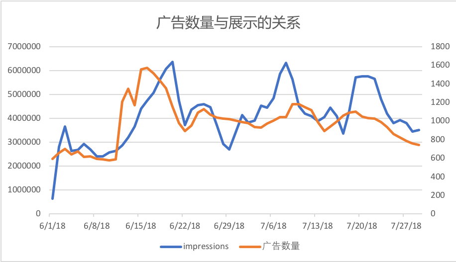

Facebook广告投放自动化需求1.0（流川枫）
目录
项目概述
需求背景
在日常的投放中发现并Facebook的人确认过后，确定在FB投放的每个广告和素材都能拿到一定的基础展示，所以想用自动化的手段来增加素材、广告的数量，目的是增加投放展示。
Facebook 营销API中提供了很多接口可以解决目前投放中遇到的问题（如批量创建、数据管理等）、提高投放的效率（自动投放），所以需要一个后台系统来调用API。
项目目标
成本可控的情况下，通过自动化提高广告投放的数量，获得更多的展示
相关数据

取值范围：6月1日-8月1日的白牌投放数据
样本量：8个广告账号，3898个广告
impression：当天所有广告所拿到的展示量之和
广告数量：当天处于激活状态的广告数量
- 结论：广告数量和展示量有强关联
规划和进度
系统规划


- 投放自动化流程
- 多渠道素材采集
- 批量创建广告
- 根据情况、算法实时调整出价
- 数据管理、查看投放效果
系统逻辑
.png)
进度
- 第一期：（8月初上线）
新主题盲测批量创建
目前进度：开发中
- 第二期：（8月中旬）
新主题自动化投放，应用rule，接入商业LTV数据，数据查看
目前进度：正在整理规则，商业LTV数据接口需求已提
- 第二期：（8月底）
接入CM design接口、图片拼接
素材生产自动化，扩大素材数量级
目前进度：—
功能需求
创建
批量创建（一期功能）
功能背景
1.提高投放效率
因为Launcher是以主题为单位来进行投放的，每周都会有新主题进行投放。而在一个新主题的投放工作里，最为繁琐重复的就是创建广告功能。所以需要批量上传工具来提升运营投放效率。
2.跑通自动化投放流程
投放自动化需求中，最基本的需求就是利用API进行广告的创建，后期会有各种不同场景的自动创建广告需求，所以首先需要验证的就是创建功能。
- 解决思路
在Ad这一级，通过选择素材的数量直接决定广告的数量，减去Ad这一级之后，需要提供信息就只有Campaign和Adset层级。而投放信息通过将部分字段写死，另外一部分字段通过模板复用，从而减少了投放信息的维护。
流程图

原型图
前端需求
1.批量创建功能界面
2.素材库
后端需求
1.创建广告接口
后端接收到来自前端的json请求后解析，将信息分为四类（Campaign,Adset,Ad,Adcreative)，并且按照顺序上传创建广告。
预留点
- 能接收创建各层级（Campaign到Adcreative层级）的单独创建请求的接口。
- 能向已有的Campaign中创建广告组、广告（如果前端返回了Campaign id这个字段，就在对应的Campaign中创建。
2.素材库的建立；前端上传完素材后，需要将素材上传到Facebook服务器，并将返回的素材id和文件一一对应。
3.拉取广告账户、应用列表的接口
预留点
- BM平台的Admin权限下来之后，广告账户和应用的拉取，将实时通过Facebook API来完成
- 这个功能放在最后做，这两周之内我会尽量申请到权限
4.测试广告账户、应用是否有关联的接口
预留点
- 关联关系可能会在之后的拉取数据功能中用到，所以需要找个地方存起来。
5.投放信息模板拉取
基本信息
维护上传所需的基本信息。
选择广告账户、应用
选择本次创建要使用的广告账户，以及关联的应用。
账号、应用列表从后端拉取。
创建名称
由运营创建时手动输入，作为正式上传名称的一部分字符串，后面选择投放信息应用模板时在前端合成正式名称。
合成规则在【名称组成规则】中详叙。
投放信息
投放信息以模板形式上传，运营在在前端填写完模板后，储存在后端，每个用户的模板是独立储存的。
每次批量创建都可以选择之前填写的模板，需要前端提供一个编辑、删除模板的入口，新增模板的入口在选择模板的边上。
为什么要使用模板上传
每次新主题创建广告所需要的信息（不包括素材），其实是有很大的重复的，按照能复用的频率来看，能分成三种信息
类型 信息 处理方式 一定要上传的 基本信息（应用名、账号Id） 每次上传填写或选用 大概率能复用 名称，出价，国家等字段 使用模板方式来复用 一定能复用的 竞价方式等 写死在后端 使用模板后，大部分时间只需要维护一定要上传的这部分信息，这样就提高了创建的效率。
新建模板
- 模板名称
手动输入模板名称
- 新建广告系列
手动输入广告系列名称
- 新建所属的广告组
输入创建广告组所需的字段，有两种信息输入方式
1.手动输入信息，点击'新增广告组'则增加空白行。
2.通过Excel粘贴批量输入，分隔符为\t
注意：不输入任何广告组也可以提交进入下一步。
- 显示信息
显示已创建的广告系列名称和对应的广告组数量，每一行边上有删除按钮
模板结构
新建模板后，以如下结构的json储存在前端。

字段对应关系
模板中的字段需要转换后放在给后端的json中，转换关系如下：
| 模板中字段名称 | 对应给后端的字段 | 处理方法 |
|---|---|---|
| 广告系列名称 | Campaign:name | 模板中的名称只是作为合成上传名称的部分字符串，和其他名称一起组成上传的名称 |
| 广告组名称 | AdSet:name | 模板中的名称只是作为合成上传名称的部分字符串，和其他名称一起组成上传的名称 |
| 国家 | AdSet:targeting:countries | 单选的国家按照附1【国家-国家代码对应关系】转换后上传即可，单选'全球'则；多选的国家需要用英文逗号拆分后转换为国家代码加入 country_groups中 |
| 出价 | AdSet:bid_amount | 传入即可 |
| 单日预算 | AdSet:daily_budget | 需要将数值转换后传入，例：10转换为1000 |
| 加速状态 | AdSet:pacing_type | 加速：no_pacing 匀速：standard |
名称组成规则
正式用API上传的名称，是由运营填写/选择的字段拼接而成的，拼接规则如下。
| 名称 | 组成规则 | 对应字段 |
|---|---|---|
| 广告系列名称 | 关联应用名称+创建名称+模板中的广告系列名称 | Campaign:name |
| 广告组名称 | 关联应用名称+创建名称+模板中的广告系列名称+模板中广告组名称 | AdSet.Field:name |
| 广告名称 | 关联应用名称+创建名称+模板中的广告系列名称+模板中广告组名称+关联素材文件编号 | Ad:name |
广告系列、广告组名称创建示例
- 关联应用名称为：3D cute cat
- 创建名称为：盲测
- 模板中的广告系列名为：一类国家
- 模板中的广告组名为：美国
则正式上传的广告系列名称为 3D cute cat 盲测 一类国家
广告组名称为3D cute cat 盲测 一类国家 美国
广告名称=广告组名称+视频编号+封面图编号（选择视频+封面图情况）
广告名称=广告组名称+图片编号（选择图片情况）
广告名称=广告组名称+视频编号（选择视频情况）
广告名称创建示例
- 广告组名称为3D cute cat 盲测 一类国家 美国
- 关联的素材为：
标题：3D cute cat 文案1： 视频：视频1、视频2
封面图：封面图1、封面图2
则这个广告组下产生的4个广告（更详细的广告创建规则参考【广告创建规则】，这里只解释名称创建规则）分别名为：
- 3D cute cat 盲测 一类国家 美国 V1 C1
- 3D cute cat 盲测 一类国家 美国 V1 C2
- 3D cute cat 盲测 一类国家 美国 V1 C1
- 3D cute cat 盲测 一类国家 美国 V2 C2
审核规则
模板中的信息需要审核后再储存，审核规则如下。
| 模板中字段名称 | 对应投放信息字段 | 审核规则 |
|---|---|---|
| 广告系列名称 | Campaign.name | 不用审核 |
| 广告组名称 | AdSet.Field.name | 不用审核 |
| 国家 | AdSet.Field.targeting:countries | 检查中文国家名称是否在【国家-国家代码对应关系】中，多选国家需要拆开后检查 |
| 出价 | AdSet.bid_amount | 出价<=2 |
| 单日预算 | AdSet.Field.daily_budget | 单日预算>0 |
| 加速状态 | AdSet.Field.pacing_type | 只能为：''匀速'' 或 ''加速'' |
国家代码转换规则
在需求文档-附录-国家代码转换规则里，需求文档同目录里有csv版本。
素材选择
通过选择素材的数量，直接在选定的广告组下创建对应数量的广告。
选择方式
- 通过广告系列选择
选择一个广告系列则是选中了其所属的所有广告组，下拉列表框，可以多选，可以全选。
- 通过广告组选择
广告组选择，下拉列表框，可以多选，可以全选。
关联素材
标题、文案需要每次关联时输入，都只支持单个，不支持一次关联多个标题、文案。
有三种素材关联方式：
这三种方式互斥，只能单选，不能多选。
被选择的图片、视频、封面图需要从后端拉取，图片、封面图需要拉取缩略图和文件名;视频最好可以拉取首帧和文件名，实现难度大的话拉取文件名即可。
- 选择图片
- 选择视频
- 选择视频+封面图
关联完成后，将对应的素材编号（不是文件名，是素材对应的Facebook素材编号！）传入json中。
广告创建规则
- 选择图片
可单选可多选，选择几张图片则在选定的广告组创建几个广告。
创建数量 = 图片数量
- 选择视频
可单选可多选，选择几张视频则在选定的广告组创建几个广告。
创建数量 = 视频数量
- 选择视频+封面图
视频、封面图都是必选，选择后创建视频、封面图排列组合的广告。
创建数量 = 视频数量*封面图数量
例：
选择了视频1、视频2
封面图1、封面图2
则在对应的广告组下创建：
视频1-封面图1
视频1-封面图2
视频2-封面图1
视频2-封面图2
广告账户、应用列表
列表通过Business Manger API拉取，具体方法可以参考参考文档或需求文档附录中【Business Manager】一节。
前后端交互
流程图

json结构
json结构需要前后端协商制定。
json字段表
| 字段名称（key) | 字段值（value) | 字段类型 |
|---|---|---|
| AD_ACCOUNT_ID | 账号编号 | string |
| APP_ID | 应用编号 | int |
| Campaign_info | Campaign信息构成的字典 | dict |
| 生成的Campaign名称 | 对应Campaign信息构成的字典 | dict |
| Adset_info | Adset信息构成的字典 | dict |
| 生成的Adset名称 | 对应Adset信息构成的字典 | dict |
| AdSet_bid_amount | 对应广告组的出价 | float |
| AdSet_daily_budget | 对应广告组的单日预算 | int |
| AdSet_pacing_type | 对应广告组的加速状态 | string |
| AdSet_targeting:country | 对应广告组的目标国家（单选国家情况） | string |
| AdSet_targeting:countries | 对应广告组的目标国家（多选国家情况） | list |
| AdSet_targeting:rule | 自定义受众：除了安装关联应用的受众 | string |
| Ad_info | Ad信息构成的字典 | dict |
| 生成的Ad名称 | 对应Ad信息构成的字典 | dict |
| Ad_title | 运营填写的标题（会有多语言） | string |
| Ad_text | 运营填写的文案（会有多语言） | string |
| Ad_image_id | Facebook素材库中的图片编号 | string |
| Ad_video_id | Facebook素材库中的视频编号 | string |
| Ad_cover_id | Facebook素材库中的封面图编号 | string |
| Ad_app_link | 关联应用的Google play链接 | string |
上传所需接口、参考文档
| 层级 | 说明 | 上传说明 | 库 | 接口 | 参考文档地址 |
|---|---|---|---|---|---|
| Campaign | 广告系列 | 创建后，返回Campaign ID | facebookads.adobjects.adaccount.AdAccount | create_campaign | Campaign |
| Adset | 广告组 | 使用返回的Campaign ID创建Adset | facebookads.adobjects.adset.AdSet | adset.update | Ad set |
| Ad | 广告 | 使用返回的Ad set ID和广告创意创建Adset | facebookads.adobjects.adaccount.AdAccount | create_ad | Ad |
| Adcreative | 广告创意（素材） | 会从后端收到素材id，使用素材id创建广告创意 | facebookads.adobjects.adaccount.AdAccount | create_ad_creative | Ad creative |
创建所需字段处理方法
创建所需字段，包括了一部分写死的字段的处理方法。
| 创建层级 | 所需字段 | 含义 | 字段来源 | 参考文档 |
|---|---|---|---|---|
| 广告系列（Campaign) | Campaign.name | 广告系列名称 | 前端 | |
| Campaign.objective | 营销目标 | 默认为： APP_INSTALLS | ||
| Campaign.status | 广告系列状态 | 批量上传时为Pause，所有上传完成后Active | ||
| 广告组（Adset) | AdSet.Field.name | 广告组名称 | 前端 | |
| AdSet.Field.campaign_id | 广告系列编号 | 自动连线，创建Campaign时获取 | ||
| AdSet.Field.daily_budget | 单日预算 | 前端 | ||
| AdSet.Field.billing_event | 计费方式 | 默认为：impression | ||
| AdSet.Field.optimization_goal | 优化目标 | 默认为：APP_INSTALLS | ||
| AdSet.Field.bid_amount | 出价 | 前端 | ||
| AdSet.Field.start_time | 开始时间 | 自动取上传当天的日期 | ||
| AdSet.Field | 结束时间 | 默认为：长期 | ||
| AdSet.Field.pacing_type | 加速状态 | 前端 | ||
| AdSet.Field.targeting:rule | 目标受众中的自定义受众 | 默认为：除了安装关联应用的受众 | 创建自定义受众参考文档 | |
| AdSet.Field.targeting:genders | 目标受众中的性别 | 默认为：不限 | ||
| AdSet.Field.targeting:countries | 目标受众中的国家 | 前端（需要区分单选和多选的情况） | ||
| AdSet.Field.targeting:age_min | 目标受众中的年龄（最小年龄） | 默认为：18 | ||
| AdSet.Field.targeting:age_max | 目标受众中的年龄（最大年龄） | 默认为：65 | ||
| 广告（Ad) | Ad.name | 广告名称 | 前端 | |
| adset_id | 广告组编号 | 自动连线，创建广告组时获取 | ||
| creative-id | 广告创意 | 自动连线，创建广告创意时获取 | ||
| 广告创意（Adcreative) | creative | 广告创意 | 前端 | |
| AdCreativeLinkData.Field.link | 素材 - app link | 前端 | ||
| AdCreativeLinkData.Field.caption | 素材 - 图片标题 | 前端（这个字段是不是标题需要确认一下） | ||
| AdCreativeLinkData.Field.message | 素材 - 图片文案 | 前端 | ||
| AdCreativeLinkData.Field.image_hash | 素材 - 图片 | 前端 | ||
| AdCreativeVideoData.Field.video_id | 素材 - 视频 | 前端 | ||
| AdCreativeVideoData.Field.image_url | 素材 - 封面图 | 前端 | ||
| AdCreativeVideoData.Field.description | 素材 - 视频文案 | 前端 | ||
| call_to_action：type | 素材 - 行动号召 | 默认为：INSTALL_MOBILE_APP | ||
| call_to_action：value:link | 素材 - 行动号召 | 默认为:app link | ||
| call_to_action：value:link_title | 素材 - 视频标题 | |||
| 素材 | 素材id | 前端 |
素材库（一期功能）
需求背景
1.批量创建功能需要提前上传素材到Facebook服务器，减少单次创建的信息量。
2.不同应用之中会有素材需要复用的情况，需要将上传过的素材储存起来。
3.后期的自动化需求通过其他接口产生素材，需要一个素材库将创建功能和素材接口连接起来。
流程图

原型图
素材上传&使用
素材使用
当选择定好关联方式时，调出素材库选择界面，只需要展示对应的类型。（关联方式选择图片时，默认拉取当前选择应用的图片，同时界面上也有选择其他应用的选项，但是不能选择其他的类型）
当选择素材时，展示文件缩略图和文件名，按照时间倒序排列（新上传的在前）。
当运营选定素材后，后端不用给前端文件，只要给前端文件对应的素材id。
前端将素材id写进创建信息json中，传回后端。
素材库管理
素材库第一期只有上传的入口，没有删查减的入口。

- 第一级
以应用名来区分的文件夹
- 第二级
以类型区分的文件夹，类型有Video\Photo\Cover三种
投放
数据查看
功能背景
- 因为Facebook政策限制，一个账号下的投放应用是有限的，所以创建了很多账号。同一个应用，可能投放的数据分布在各个账号中，查看数据的时候十分不方便，需要有一个统一的数据查看平台。
- 基于之后的投放自动化的需求，需要将数据拉取下来之后根据算法计算评分，然后根据评分做出出价、预算等变动。所以需要一个数据查看平台。
查看数据
- 选择应用
- 选择查看时间段
- 选择查看维度（广告系列、广告组、广告）
- 查看细分数据（国家、版位等）
选择完成后选择点击应用按钮，则从服务器调取相应的数据。
数据筛选、排序
数据筛选
可以对每一个数值列进行区间筛选（规定展示的最小值和最大值区间）
数据排序
单击列名可以对该列进行排序
原型图
投放规则
广告规则是在广告规则库中创建和存储的独立对象，至少包含一个 name、一个 evaluation_spec 和一个 execution_spec。规则的基本架构如下所示：
curl \-F 'name=Rule 1' \-F 'evaluation_spec={...}' \-F 'execution_spec={...}' \-F "access_token=<ACCESS_TOKEN>" \https://graph.facebook.com/<VERSION>/<AD_ACCOUNT_ID>/adrules_library
Facebook 会在成效分析指标或对象元数据字段出现变化时评估实时触发规则，根据设置的时间间隔评估定期触发规则。
判断逻辑
判断impression --> 判断install --> 判断CPI --> 判断CTR -->判断CVR
流程图
.png)
非功能需求
账号管理
创建所需的账号、应用、token都通过Business Manager API来拉取。
后期会加上账号权限管理这一块，这一期实现拉取功能即可。
附录
Token手动获得方式

生成长期Token
- Short-lived access token obtained via login dialog.
- Start with a short-lived token generated on a client and ship it back to your server.
- Use the user token, your app ID and app secret to make the following call from your server to Facebook's servers:
GET /oauth/access_token?grant_type=fb_exchange_token&client_id={app-id}&client_secret={app-secret}&fb_exchange_token={short-lived-token}
自动获取token请参考【Business Manager平台】这一节的内容。
Business Manager平台

Business Manager平台的功能是管理资产，资产包括广告账户、应用等，可以通过Business manager API来拉取应用、账号列表，以及对于的token。
目前我们有的是BM平台admin和System user级别的token，admin token用于权限分配，system user token用于实际api调用。出于安全原因不写在这，需要的话找我要。
查看自有帐户
您可以通过 GET 调用查看商务管理平台可访问的所有广告帐户：
curl -G \-d "access_token=<ACCESS_TOKEN>" \"https://graph.facebook.com/<API_VERSION>/<BUSINESS_ID>/owned_ad_accounts"
这会返回商务管理平台拥有的所有广告帐户。有些字段会特别指明平台与广告帐户之间的关系。
查看商务管理平台拥有的应用
如要查看商务管理平台拥有的所有应用程序：
curl -G \-d "access_token=<ACCESS_TOKEN>" \"https://graph.facebook.com/<API_VERSION>/<BUSINESS_ID>/owned_apps"
这会返回一列与商务管理平台关联的应用。
认领应用
Facebook文档中，有提到认领应用的功能，但是没有具体的命令，正在跟FB的人交流中。没有认领应用的命令的话，会通过手动添加完成，现在白牌所需的应用已经都关联到了白牌项目下。
生成token
项目
按照逻辑分组来组织商务管理平台的资产，例如广告帐户、主页、应用。项目更便于您浏览商务管理平台的层级。您可以用项目管理多个经销商和客户拥有的资产。每个资产只能有一个标签。
如要创建商务管理平台项目，您必须在 POST 请求中指定 name。
curl \-F "name=Test label" \-F "access_token=<ACCESS_TOKEN>" \"https://graph.facebook.com/<API_VERSION>/<BUSINESS_ID>/businessprojects"
您可以通过 GET 请求查看商务管理平台帐户下的所有标签：
curl -G \-d "access_token=<ACCESS_TOKEN>" \"https://graph.facebook.com/<API_VERSION>/<BUSINESS_ID>/businessprojects"
查看商务管理平台中的项目
您可通过发出此 GET 调用查看项目的详情：
curl -G \-d "access_token=<ACCESS_TOKEN>" \"https://graph.facebook.com/<API_VERSION>/<PROJECT_ID>"
项目的广告帐户
您可发出以下 POST 调用为项目添加广告帐户：
curl \-F "adaccount_id=act_<ADACCOUNT_ID>" \-F "access_token=<ACCESS_TOKEN>" \"https://graph.facebook.com/<API_VERSION>/<PROJECT_ID>/adaccounts"
您可发出以下 GET 调用查看某个项目下的所有广告帐户：
curl -G \-d "access_token=<ACCESS_TOKEN>" \"https://graph.facebook.com/<API_VERSION>/<PROJECT_ID>/adaccounts"
您可发出以下 DELETE 调用从项目移除广告帐户：
curl -X DELETE \-F "adaccount_id=act_<AD_ACCOUNT_ID>" \-F "access_token=<ACCESS_TOKEN>" \"https://graph.facebook.com/<API_VERSION>/<PROJECT_ID>/adaccounts"
项目的应用
您可发出以下 POST 调用为项目添加应用：
curl \-F "app_id=<PAGE_ID>" \-F "access_token=<ACCESS_TOKEN>" \"https://graph.facebook.com/<API_VERSION>/<PROJECT_ID>/apps"
您可发出以下 GET 调用来查看某个项目下的所有应用：
curl -G \-d "access_token=<ACCESS_TOKEN>" \"https://graph.facebook.com/<API_VERSION>/<PROJECT_ID>/apps"
您可发出以下 DELETE 调用从项目中移除应用：
curl -X DELETE \-F "app_id=<PAGE_ID>" \-F "access_token=<ACCESS_TOKEN>" \"https://graph.facebook.com/<API_VERSION>/<PROJECT_ID>/apps"
给用户分配广告账户
之后的功能中可能会加入对于账号权限管理的部分，先将参考文档贴在这。
管理用户和身份
商务管理平台中有两种类型的身份：
| 名称 | API 常量 | 说明 |
|---|---|---|
| 管理员 | ADMIN | 可以管理商务管理平台的各个方面，包括修改或删除帐户、为工作人员列表添加或移除用户。对商务管理平台关联的全部资产拥有 READ 和 WRITE 访问权限。 |
| 工作人员 | EMPLOYEE | 可以查看商务管理平台设置中的所有信息，且可由商务管理平台管理员分配身份。不能进行任何更改，只能将自己担任管理员的主页或广告帐户添加到商务管理平台中。对商务管理平台关联的全部资产拥有 READ 访问权限。 |
如要了解有关身份的更多信息，请参阅在商务管理平台中设置目录身份。
邀请用户
如需将同事添加到商务管理平台，您必须邀请他们。发出邀请时，请提供他们能使用的有效邮箱。发送在商务管理平台添加工作人员的请求有数量限制。当您达到此限制时，将收到错误代码 17，但在 24 小时后应能再次发送请求。
如要邀请用户担任工作人员，请发送以下 POST 请求：
curl \-F "email=some@email.com" \-F "role=EMPLOYEE" \-F "access_token=<ACCESS_TOKEN>" \"https://graph.facebook.com/<API_VERSION>/<BUSINESS_ID>/business_users"
Facebook 会向您指定的工作邮箱发送一封邀请邮件。被邀请人必须查收邮件，并按照注册流程操作。他们完成操作后，您便可在用户列表中看到他们。
注意：如果邮件接收不到的话，在 POST 请求返回的结果中有邀请链接；
添加用户到帐户
在您的商务管理平台具有广告帐户后，您现在可以分配平台上的其他用户身份，如下所示：
| 名称 | API 常量 | 说明 |
|---|---|---|
| 仅报告 | REPORTS_ONLY | 可以查看广告表现 |
| 一般用户 | GENERAL_USER | 可以查看和编辑广告，并使用与广告帐户相关联的资金源设置广告，但不能设置帐户级别 |
| 管理员 | ADMIN | 可以管理广告系列、报告、账单和帐户权限的各个方面 |
您需要：
adaccount_id：广告帐户编号（格式为act_123）user_id：要添加的用户编号- 要分配的身份
如要添加新用户作为管理员，请发出以下 POST 调用：
curl \-F "user=BUSINESS_SCOPED_USER_ID" \-F "role=ADMIN" \-F "access_token=ACCESS_TOKEN" \"https://graph.facebook.com/VERSION/act_AD_ACCOUNT_ID/assigned_users"